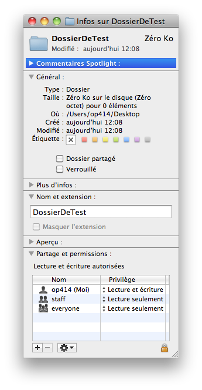

Vous avez une machine sous Linux chez vous que toute la famille utilise ? Ou tout simplement un ordinateur partagé ?
Dans ce cas, vous avez surement déjà été confronté à un problème de permissions de fichiers et dossiers, par exemple vous voulez créer un dossier partagé, mais vous ne souhaitez que certains sous-dossiers ne soient accessibles qu'à certains utilisateurs, modifiables par d'autres, etc...
Dans ce cas, le système de permissions de Linux basé sur les utilisateurs et les groupes devient vite un casse-tête sans nom :p qui peut conduire à des problèmes de sécurité :colere2:
Les Access Control Lists (ACL) vous permettent de créer des permissions à la carte, fini la prise de tête :) ,toutes les combinaisons sont possibles.
Tout d'abord, sachez que les ACL ne peuvent être utilisées que si le noyau le supporte :colere2: ; pour savoir si c'est votre cas, loguez-vous en tant que root avec sudo su si vous êtes sous (k)Ubuntu ou su - sous debian et les autres distribs. Tapez ensuite :
La ligne suivante indique que le support général des ACL est présent :
CONFIG_FS_POSIX_ACL=y
Ensuite des lignes du type suivant permettent de savoir pour quels systèmes de fichiers les ACL sont disponibles :
CONFIG_SystemeDeFichiers_FS_POSIX_ACL=y
On remarque que chez moi, Les ACL fonctionnent sur les volumes formatés en EXT2, EXT3, EXT4 et pleins d'autres formats exotiques :) Les ACL ne sont pas disponibles sur les systèmes vfat (FAT16 et FAT32), vous ne pourrez donc pas utiliser les ACL sur une clée USB formatée pour Windows :colere2: Cela ne devrait toutefois pas poser problème :) .
Si votre noyau ne supporte pas les ACL, vous devez le recompiler. Je n'ai pas eu ce problème, je ne peux donc que vous orienter vers cet article du site http://www.lea-linux.org
Installation du paquet acl
Les ACL sont activées, mais nous ne pouvons toujours pas les modifier, pour cela nous devons installer le paquet acl :
# apt-get install acl
Le plus dur est fait, nous pouvons enfin nous servir des ACL :soleil:
Pour ajouter une ACL, vous devez utiliser la commande setfacl avec l'option -m :
setfacl -m permissions fichierOuDossier
les permissions s'écrivent sous cette forme :
préfixe:[utilisateurOuGroupe:]droits
Les préfixes disponibles sont :
u: : Pour modifier les droits d'un utilisateur
g: : Pour modifier les droits d'un groupe
o: : Pour modifier les droits du reste du monde (other)
Pour le préfixe o:, il ne faut pas spécifier d'utilisateur (logique, puisque ces droits s'appliquent au reste du monde, qui n'est pas un utilisateur précis ;) )(d'où le utilisateurOuGroupe: entre crochets pour ceux qui ne connaissent pas les expressions régulières)
Les droits s'écrivent sous la forme d'un triplet rwx que vous devez déjà connaitre :
r = droit de lecture
w = droit d'écriture
x = droit d'exécution pour les fichiers, pour les dossiers, c'est le droit "d'entrée" dans le dossier
Pour ne pas attribuer un droit, vous pouvez ne pas écrire sa lettre correspondante ou la remplacer par un tiret (r-- est équivalent à r)
setfacl -m u:bernard:rw- test
... donnera les droits de lecture et d'écriture à bernard pour le fichier test.
Ajouter l'option -R permet d'appliquer des droits à tout un répertoire :
setfacl -Rm u:bernard:rw RepertoireDeTest/
... effectuera la même opération que tout à l'heure mais sur tout le dossier RepertoireDeTest
setfacl permet aussi de modifier les droits classiques (comme chmod) :magicien: Il faut spécifier un nom vide :
setfacl -m u::rwx,g::r--,o:--- test
... donnera les droits rwxr----- au fichier test :)
Doits par défaut et héritage
Avec ce que je vous ai appris, si vous appliquez une ACL à un dossier, les fichiers créés ensuite dans se dossier n'hériteront pas de son ACL. Heureusement, l'héritage des ACL est possible :) , il suffit de rajouter le préfixe d: (comme default) au début de l'ACL :
setfacl -m d:u:bernard:rw RepertoireDeTest/
Il cependant possible de se passer du préfixe d:, grâce à l'option -d, dans ce cas, toutes les permissions spécifiées seront des permissions par défaut :
setfacl -dm u:bernard:rw,o:--- RepertoireDeTest/
... aura le même effet que le code précédent.
Ajouter des droits par défaut ne modifie pas les droits existants :colere2: , si vous shouaitez ajouter une ACL à tout un répertoire et ses sous-répertoires ET que cette ACL soit héritée par la suite, vous devez le faire de cette manière : (notez la présence de l'option -R)
je ne m'étends pas sur les résultats, ils sont facile à comprendre :) , hormis une notion : le masque (mask)
Le masque
Le masque vous permet de savoir quelles sont les autorisations maximales accordées à un fichier ou dossier (utilisateurs et groupes confondus), les droits classiques (chmod) ne sont pas comptabilisés.
getfacl test
# file: test
# owner: op414
# group: op414
user::rwx
user:bernard:rwx
user:patrick:r--
group::rwx
mask::rwx
other::--
Ici, le masque est rwx car bernard possède les droits rwx. L'utilité du masque est de pouvoir enlever des permissions à tous les utilisateurs et groupes (sauf de l'utilisateur propriétaire, dont les droits sont définis par chmod):
setfacl -m m:r-- test
Vous remarquez qu'il faut utiliser le préfixe m: (comme mask). Refaisons un coup de getfacl sur le fichier :) :
getfacl test
# file: test
# owner: op414
# group: op414
user::rwx
user:bernard:rwx #effective:r--
user:patrick:r-- #effective:r--
group::rwx #effective:r--
mask::r--
other::---
On remarque que les droits de bernard, patrick et du groupe propriétaire n'ont pas été modifiés (ce qui permet de les rétablir en ré-augentant le masque :) ). En revanche, il est maintenant écrit #effective:r-- en face de leurs lignes. Cela signifie que leurs droits réellements appliqués sont r-- ! :soleil:
Les commandes cp et mv sont capables de conserver les ACL. Il suffit de spécifier l'option -a lors de l'utilisation de cp . mv le fait au-to-ma-ti-que-ment :-° . Bien entendu, le répertoire cible doit être situé sur une partition gérant les ACL :)
Un dernier point : quand un fichier possède une ACL et que vous faites un ls -l, l'ACL ne peut être écrite en entier ; le signe + s'affiche pour signifier le présence de l'ACL : -rw-rw----+ :)
Monter les partitions avec l'option acl
Pour que vous puissiez utiliser les ACL, les partitions doivent êtres montées avec l'option correspondante...
# mount -t ext3 -o defaults,acl /dev/hda1/ /home
... pour monter la partition 2 du premier disque, formatée en ext3 dans le répertoire /home
Vous pouvez remonter un partition déjà montée :
# mount -o remount,acl /home
Si vous voulez que le volume soit monté automatiquement avec l'option acl, vous devez modifier le fichier /etc/fstab
# nano /etc/fstab
Vous devez rajouter ,acl dans la colonne "options" de la partition concernée :
/dev/sda1 / ext3 errors=remount-ro 0 1
devient chez moi :
/dev/sda1 / ext3 errors=remount-ro,acl 0 1
Voilà, ma partition principale sera automatiquement montée avec l'option acl au démarrage :magicien: Si vous avez une partition /home séparée, vous devez bien entendu modifier sa ligne.
Il ne vous reste plus qu'à redémarrer ou remonter les partitions concernées comme vu précédemment :)
Exemple d'utilisation concret
Voici un exemple d'utilisation des ACL, il est issu de ma propre utilisation de vos nouvelles meilleures amies :)
Si vous créez un serveur web grâce à ce tuto, vous risquez d'avoir un petit problème de permissions. En effet, votre machine ne possède que deux vrais comptes utilisateur (le votre et le compte root), si vous vous loggez en FTP, le serveur vsFTPd utilise l'uilisateur www-data. Le compte virtuel d'administration à accès à tout le répertoire /home mais ne pourra pas entrer dans votre répertoire personnel car celui-ci appartient à votre compte utilisateur et non pas à www-data :colere2:
Pour palier ce problème, il suffit d'utiliser cette ACL :
... dans le cas ou votre compte utilisateur est op414
Le problème est résolu :)
PS: Il aurait également été possible de supprimer votre compte utilisateur (A NE SURTOUT PAS FAIRE SOUS UBUNTU ET DÉRIVÉS CAR IL EST IMPOSSIBLE DE SE LOGGER EN ROOT), mais le seul moyen de se connecter en SSH à votre serveur aurait été le compte root, ce qui est dangereux car il vaut mieux empêcher la possibilité de se connecter en root via SSH pour limiter les dégâts en cas d'attaque. Il est donc préférable de garder un compte utilisateur standard :)
ACL et interface graphique
Sous Mac OS X
Sous Mac OS X, les ACL sont activées par défaut et paramétrables via l'interface graphique :) Il suffit de sélectionner un dossier ou fichier puis d'afficher le panneau d'informations (pomme + i ou cmd + i)

La section "Partage et Permissions" est celle qui nous intéresse. Le plus en bas à gauche permet d'ajouter une ACL pour un utilisateur, tandis que le moins permet de supprimer un utilisateur de la liste. L'icône d'engrenage permet d'appliquer l'ACL à tous les fichiers et dossier d'un répertoire. Si vous n'êtes pas le propriétaire du fichier ou dossier, un mot de passe administrateur vous serra demandé ;)
Sous KDE (Dolphin)
Les ACL peuvent aussi être modifiées via l'interface graphique :) Voilà comment faire sous KDE, muni de Dolphin, un explorateur de fichiers.
Allez dans les information du fichier, puis cliquez sur l'onglet «Droits d'accès» puis sur «Droits d'accès avancés». Vous pouvez ensuite ajouter des entrées, les modifier et les supprimer.
Voilà, les ACL n'ont plus de secret pour vous ;) J'espère que cela vous sera utile. Ceci est mon premier tutoriel, si vous avez des remarques ou des questions, n'hésitez pas à les écrire dans les commentaire de ce tuto :)
{kind=link}
{kind=link}
{kind=link}
{kind=link}